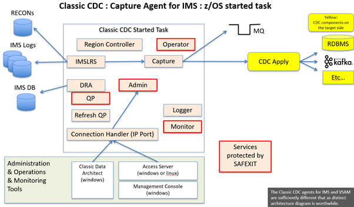

| Author: | Neale Armstrong |
| Email: | neale.armstrong@au1.ibm.com |
| Last Modified: | January 2022 |
Contents
This document is a worked example of setting up Classic CDC for IMS as a CDC Source Server.
The documents below can all be accessed at Zeditor.Org
Classic CDC for IMS is a CDC Capture Source only. It does not have CDC Apply functionality.
CDC Replication is a set of products that implement a common data replication architecture spanning a large number of diverse data sources and targets. The CDC common architecture is based upon replication of data that conforms to the relational model. Any CDC capture or apply agent that supports a non-relational data structure must perform whatever conversion work that is necessary to implement a mapping between that data structure and the relational model of data.
The core functionaility of any CDC Capture agent is to read the source database logs asynchronously, stage captured data (preferably in memory) until the Unit of Work is commited or rolled back, and then publish the changes over TCPIP sockets to a CDC Apply agent.
In addition to the usual requirements, Classic CDC for IMS needs to handle the fact that IMS data is stored in hierarchical structures (not relational), and the Log configurations supporting IMS workloads (online and batch) are significantly different to a comparatively simple recovery log used by most relational databases.
Regarding hierarchical data structures: The Classic CDC for IMS product provides tooling to map the hierarchical data structures into relational projections of that data, for the purposes of acting as a CDC Replication capture agent. The mappings of data structures are stored in a zFS dataset called the "Classic Catalog". This contains relational catalog tables like Db2 ( sysibm.systables , sysibm.syscolumns etc... ) that contain the mapping between the fields in the relevant copybooks for the IMS data, and their relational projection. The mapping information allows SQL access to the IMS database to retrieve the base data, and also allows IMS log records to be consumed for the purposes of capturing IMS database changes.
Regarding IMS logs:Interfaces must be established between Classic CDC and the IMS logging environment, which is managed by DBRC. Additionally new log records (Type 99) must be cut for IMS databases, because standard Type 50 log records do not contain enough information for the purposes of data repliaction.
The diagram below is a representation of the components within a Classic CDC for IMS started task, and how they relate to external artefacts.
The services that are outlined in red are the ones that can be protected by the SAF Exit. The primary services involved in the cdc capture server are the IMS Log Reader Service (IMSLRS) and the Capture process (Capture). The following is a brief summary of what some of the key services do.
| Service | Function |
|---|---|
| Connection Handler | Listens on a TCPIP port for requests from other CDC components (Classic Data Architect, Management Console & Access Server, CDC Apply agents). |
| Admin Service | Dispatches tasks to appropriate services within the Started Task. |
| Query Processor | Converts SQL requests into DL/I language to access IMS data structures. |
| DRA | Sevice to connect to IMS via the IMS Database Remote Access interface. |
| IMSLRS | IMS Log Reader Service. |
| Capture | Extracts log changes needed for subscriptions, and publishes them over TCPIP to CDC Apply Agents. |
| Operator | Command Processor. (Start, Stop, Park etc... ) |
| Logger | Writes Started Task logs to z/OS logstreams. |
| Monitor | Tracks health and performance data. |
All the services, and their governing parameters are documented in the knowledge centre Classic Services.
There are a lot of moving parts, and a lot of inter-related dependencies in setting up Classic CDC for IMS. It is helpful to establish a structured overview of the main installation and configuration activities before diving into the technical details of very nut and bolt. This paper identifies five separate stages of implementation
SMPE installation is a well documented, standardised process that every systems programming shop manages with their own standards. It is outside the scope of this paper, aside from noting that it is a pre-requisite to the followng stages.
Once the SMPE installation is complete, the following target libraries will exist under the chosen high level qualifier. (CCDC in this example).
| Library | Contents |
| CCDC.SCACBASE | xxxx |
| CCDC.SCACCONF | xxxx |
| CCDC.SCACLOAD | xxxx |
| CCDC.SCACMAC | xxxx |
| CCDC.SCACMSGS | xxxx |
| CCDC.SCACSAMP | xxxx |
| CCDC.SCACSIDE | xxxx |
| CCDC.SCACSKEL | xxxx |
The installed product code can now be used to support one or more instances of Classic CDC for IMS. This worked example will create a single instance, under the instance high level qualifier of CCDC.I1.
Creating the instance libraries is easy. Just edit CCDC.SCACSAMP(CECCUSC1) to specify the high level qualifier for the instance libraries, and submit the job to create the instance libraries.
line 1 of my codeline 2 of my codeline 3 of my code
The result should be to allocate the following libraries.
| Library | Contents |
| CCDC.I1.USERCONF | xxxx |
| CCDC.I1.SCACSAMP | xxxx |
xxx
xxx
xxx
xxx
xxx
xxx
xxx
This document
This document
xxx
xxx
xxx
This document
This document
xxx
xxx
xxx
This document
xxx
This document
This document
This document
xxx
xxx
This document
xxx